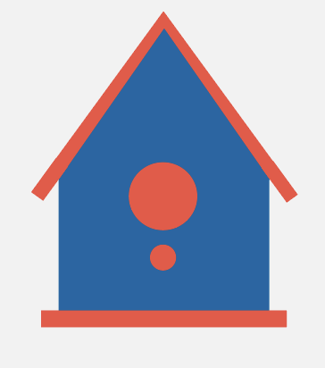
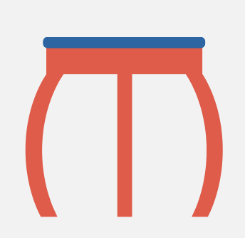

Projecten
Bij The Upcycle zijn ze constant bezig met nieuwe dingen te creëren van wat anderen als afval zien. Met hun team gaan ze graag nieuwe projecten aan en hebben dat al voor meerdere bedrijven gedaan. Als jij een bedrijf hebt dat hier gebruik van wil maken kan je contact met ze opnemen en samen een duurzaam verschil maken.
Eigenhaard
Eigenhaard renoveert jaarlijks honderden woningen, wat veel afval oplevert. Ze willen echter duurzamer en meer circulair worden. Bij renovaties zijn ze verplicht om vogel- en vleermuiskasten te plaatsen, zodat de dieren niet worden benadeeld. Daar kwamen wij, The Upcycle, in beeld.
Wij kregen de vraag of we deze kasten konden maken van het renovatieafval. Na een analyse bleek dat de oude houten vloeren ideaal waren. In samenwerking met Ecoresult hebben we vervolgens de perfecte ontwerpen gemaakt—een combinatie van milieuvriendelijk design en hergebruikte materialen, vol liefde voor de natuur!
Woonzorg Nederland
Woonzorg is een woningcorporatie die bij een groot renovatieproject met veel restmaterialen bleef zitten. Ze vroegen ons om een tafel, stoelen en een kast te ontwerpen en te produceren. Woonzorg realiseerde zich hoeveel bruikbare materialen tijdens renovaties worden weggegooid en besloot deel te nemen aan de circulaire Upcycle-beweging.
We ontwierpen alles met behulp van een automatische CNC-frees en hergebruikten zoveel mogelijk van het restmateriaal. Zo werden de uitgesneden delen van de tafel en stoelen gebruikt voor de productie van de kasten. De tafels, stoelen en kasten staan nu in het hoofdkantoor van Woonzorg om te laten zien dat hergebruik van afvalmaterialen mogelijk is.